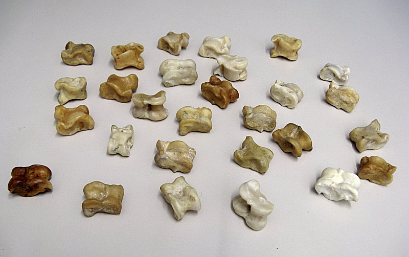
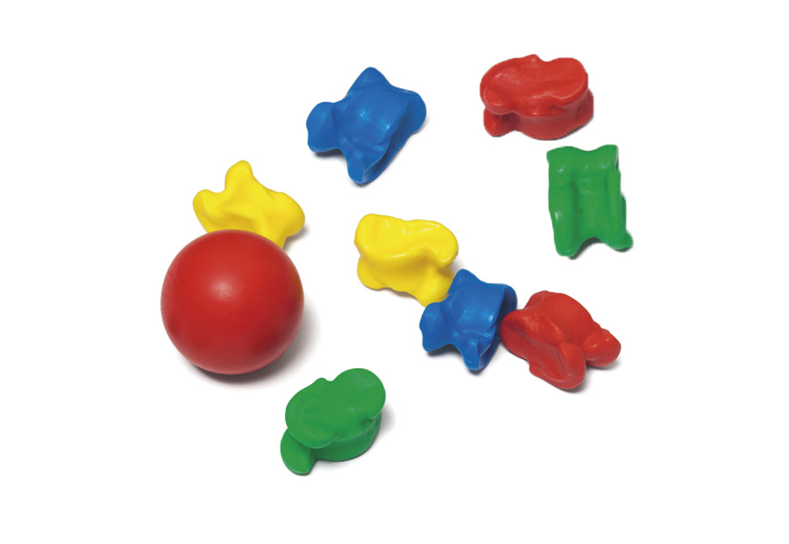
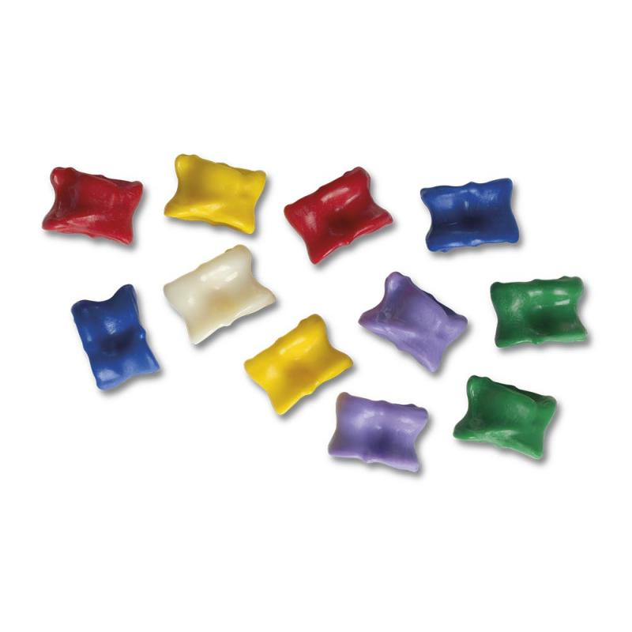

Bullit i desgreixat
Bullir els ossos entre 30 i 60 minuts amb aigua i una mica de detergent o bicarbonat ajuda a estovar i retirar restes orgàniques.
Neteja i preparació
Del garró al joc: un procés artesanal que demana neteja, paciència i una mica de criteri per conservar bé la peça.
Bullir els ossos entre 30 i 60 minuts amb aigua i una mica de detergent o bicarbonat ajuda a estovar i retirar restes orgàniques.
Amb raspall o eina petita, es retiren tendons i cartílags fins que la superfície queda neta i definida.
L’aigua oxigenada permet aclarir la peça. El lleixiu no és recomanable perquè pot malmetre l’os.
Es poden reservar quatre peces naturals i tenyir-ne una per fer de mare o peça diferenciada. També es poden polir lleugerament les arestes i protegir la pintura amb una capa final.




Acabat i presentació
Quan la taba ja està neta, seca i ben seleccionada, encara es poden fer alguns ajustos finals: separar les peces més equilibrades, reservar-ne una com a mare i decidir si es mantenen amb acabat natural o amb una lleugera diferenciació visual.
Aquesta fase final també és interessant perquè permet comparar la preparació artesanal amb jocs ja muntats o comercialitzats. Així sentén millor què es guanya quan es treballa amb peces reals i què canvia quan el joc es presenta com a producte acabat.
Si es vol un acabat més tradicional, es poden fer servir tints naturals, com la pell de ceba per a tons daurats o altres banys suaus de color. Si es busca més contrast visual, funcionen millor les pintures acríliques o els esmalts.